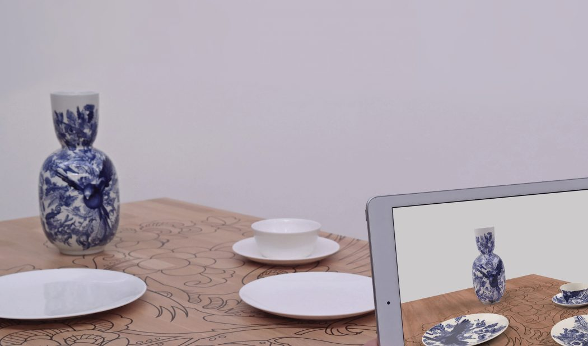

Augmented Blueware
2018
When employed at TWNKLS | augmented reality (later acquired by PTC AR), I built a mobile application for Royal Delft and FLEX/design.
"The Dutch Design Award jury rewards ‘Augmented Blueware’ with a Dutch Design Award 2018. They praise the close cooperation of the three partners Royal Delft, TWNKLS | augmented reality and FLEX/design. This resulted in the development of a unique concept; Augmented Blueware, an exclusive tableware, with the decorations of a unique hand-painted Delft Blue vase.

The Augmented Blueware app
A video demonstration of the Augmented Blueware app